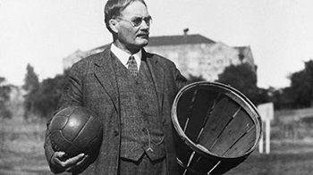

Basketball Today

Basketball is a game played between two teams of five players each on a rectangular court, usually indoors. Each team tries to score by tossing the ball through the opponent's goal, an elevated horizontal hoop and net called a basket.
The Father of Basketball

Basketball was invented by the Canadian James Naismith in Springfield, Massachusetts, in 1891. After moving to the United States, he wrote the original basketball rule book and founded the University of Kansas basketball program, where he would work until his death.